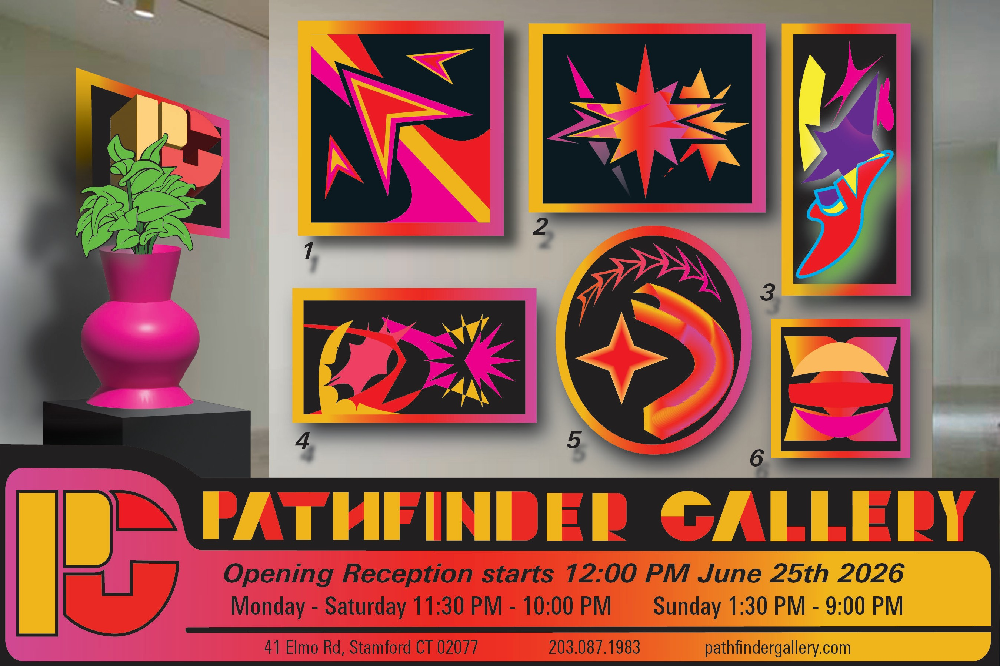
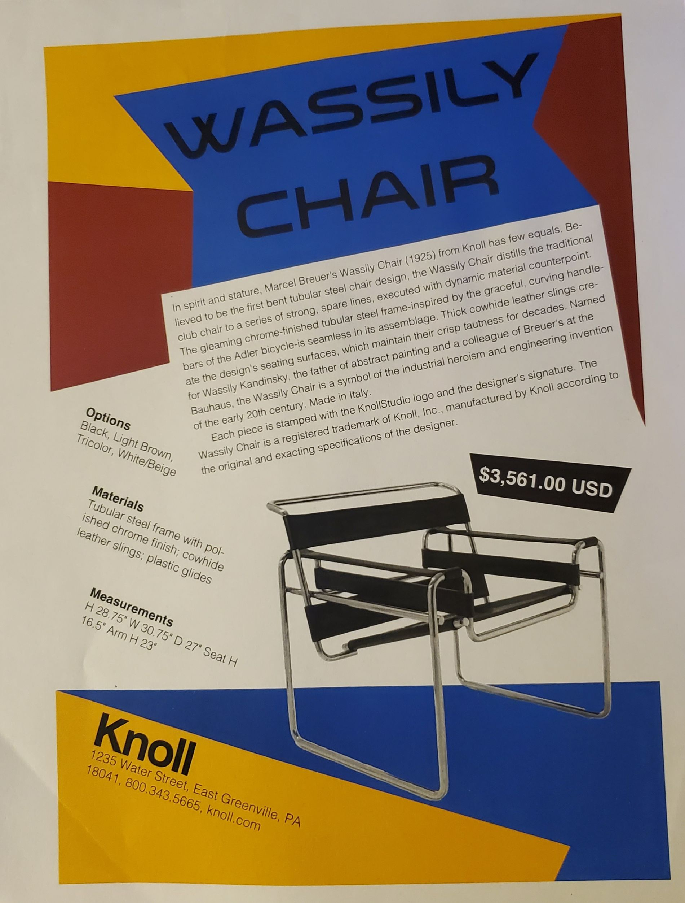
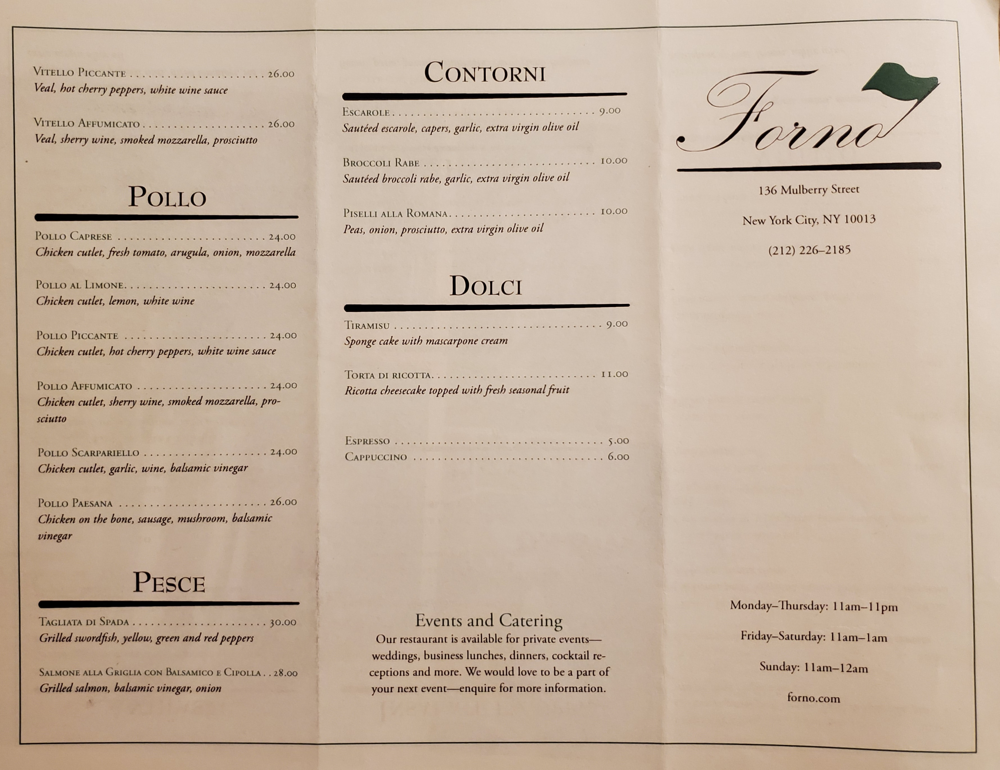

Illustration
Works I have done that through Illustrator
Works

Pathfinder Gallery
A weird and abstract art gallery based off the Pathfinder tool in Adobe Illustrator.
Turbo Blade Comic Cover
A retro-style comic cover for my Original Character and self-insert created using bold and dynamic illustrations in Illustrator.

Wassily Chair Advertisement
A Bauhaus-style advertisement for the Wassily Chair created using detailed vector illustrations and sans-serif typography.

Restaurant Menu
A restaurant menu design created using vector illustrations and a mix of serif and sans-serif typography with an original logo.